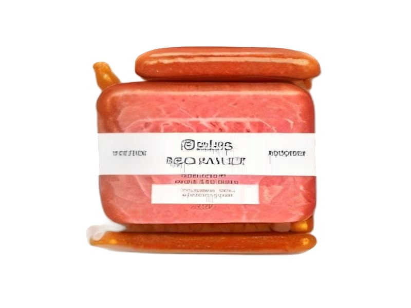

Mięsa i ryby
Kabanosy
Kabanosy: 25 g białka, 450 kcal, 1.5 g węglowodanów i 38 g tłuszczu na 100 g. Kategoria: Mięsa i ryby.
Kalorie450 kcalna 100 g
Białko / proteiny25 g
Węglowodany1.5 g
Tłuszcz38 g
Cena (szac.)~3,80 złza 100 g
Ceny zaktualizowano: maj 2026 (szacunek — ceny w popularnych supermarketach)
Porcja: garść (50g)
| Kalorie | 225 kcal |
|---|---|
| Białko | 12.5 g |
| Węglowodany | 0.8 g |
| Tłuszcz | 19 g |
| Cena (szac.) | ~1,90 zł |
Szczegółowe składniki odżywcze na 100 g
| Wartość energetyczna (kalorie) | 450 kcal |
|---|---|
| Białko (proteiny) | 25 g |
| Węglowodany | 1.5 g |
| Tłuszcz | 38 g |
| Tłuszcze nasycone | 15 g |
| Tłuszcze nienasycone | 23 g |
| Witaminy i minerały | Żelazo, Cynk, Witamina B12 |
| Współczynnik kcal / 1 g białka | 18.0 |
| Cena produktu (szac. za 100 g) | ~3,80 zł |
| Cena za 100 g białka (szac.) | ~15,20 zł |